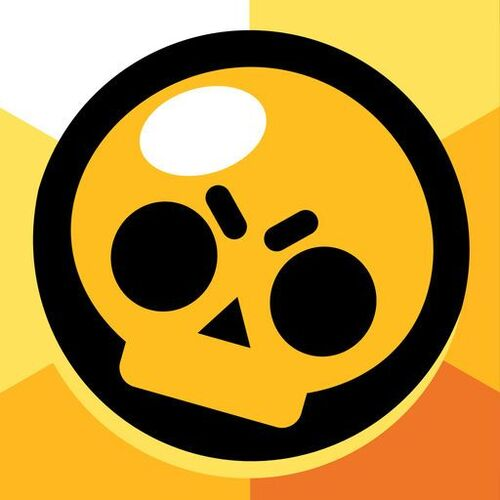
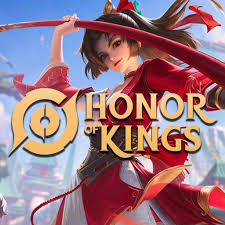

Roblox é uma plataforma de jogos online que permite aos usuários criar, compartilhar e jogar jogos criados por outros usuários.

Minecraft é um jogo eletrônico de construção em mundo aberto, desenvolvido pela Mojang Studios. Lançado em 2011, o jogo permite aos jogadores explorar um mundo gerado proceduralmente, composto por blocos tridimensionais.

Brawl Stars é um jogo eletrônico de ação e estratégia desenvolvido pela Supercell. Lançado em 2018, o jogo é um multiplayer online que combina elementos de jogos de tiro em terceira pessoa e jogos de arena.

Honor of Kings é um jogo eletrônico de batalha multiplayer online (MOBA) desenvolvido pela Tencent Games. Lançado em 2015, o jogo é extremamente popular na China e em outros países asiáticos, sendo um dos jogos para dispositivos móveis mais jogados no mundo.